Windowsパソコン上で、FileZilla・PowerShellが使える
Linuxサーバーの接続情報（ユーザー名、パスワード、ホスト名/IP）
FileZillaのインストール
①FileZillaのサイトにアクセスします。
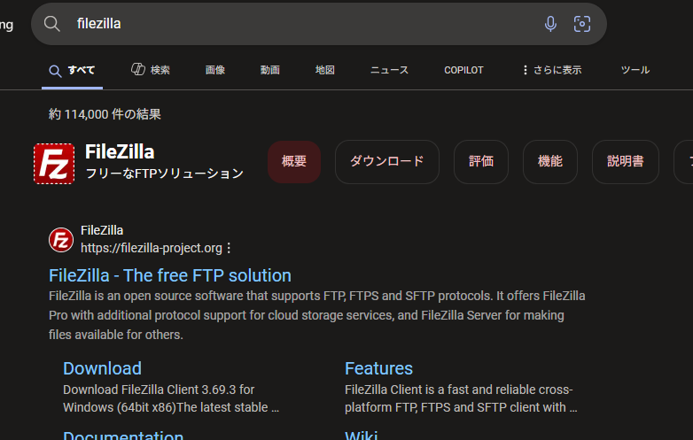
②ダウンロードしてインストールします。
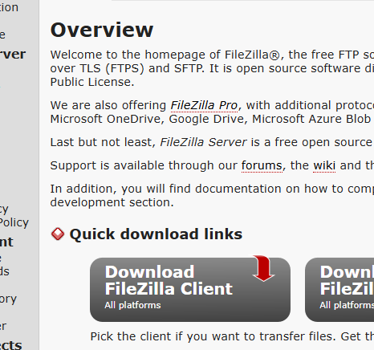
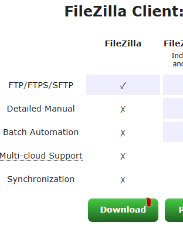
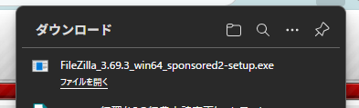
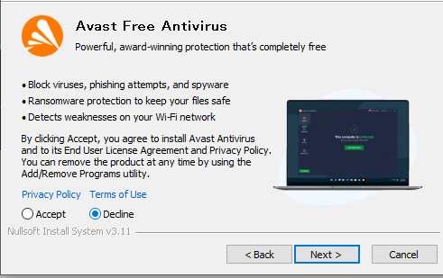
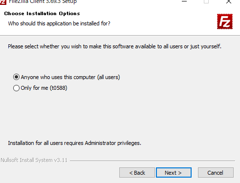
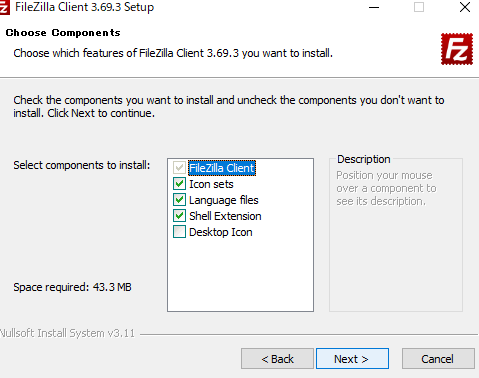
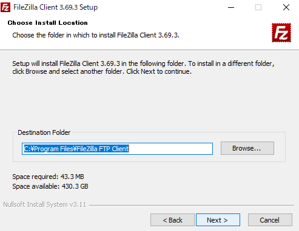
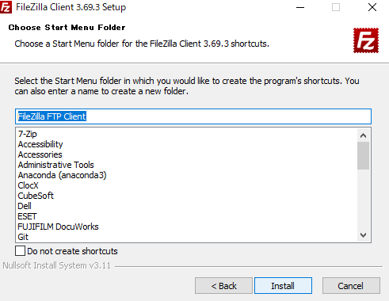
FileZillaで音声ファイルをサーバーへコピー
① FileZillaの起動と接続
FileZillaを起動します。
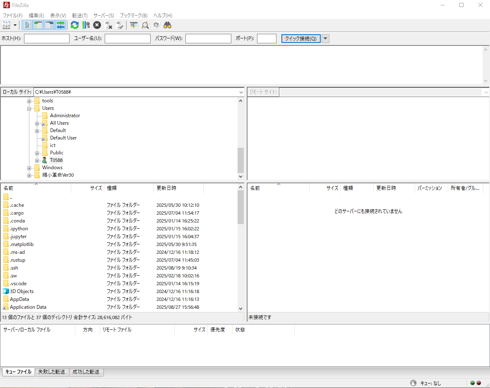
画面上部の欄に以下を入力します。
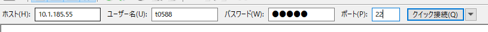
「クイック接続」をクリックします。
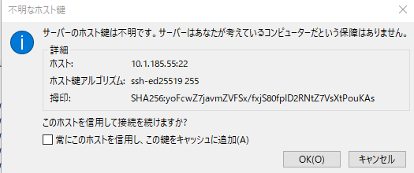
② サーバーの作業ディレクトリ確認・作成
右側（サーバー側）のウィンドウで、ご自分のホームディレクトリ（例 /home/ユーザー名）を開きます。
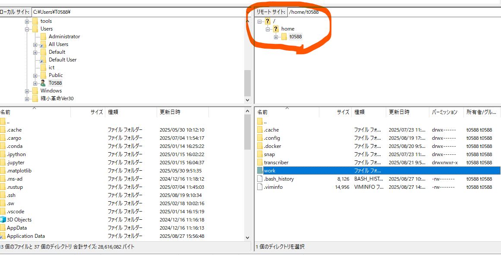
文字起こし用の作業用ディレクトリ（例 work）がなければ、右クリック→「ディレクトリの作成」を選び、任意の名前（例 work）で作成します。
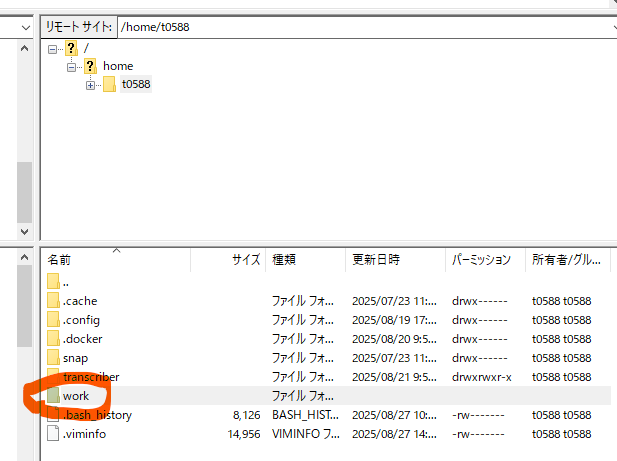
作業用ディレクトリを開いた状態にします。
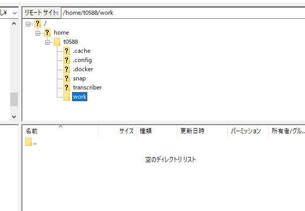
③ 音声ファイルの転送
左側（ローカルPC）のウィンドウで、転送したい音声ファイルがある場所を開きます。
※ファイルパスを入力したらファイルサーバー上のファイルにもアクセスできます。
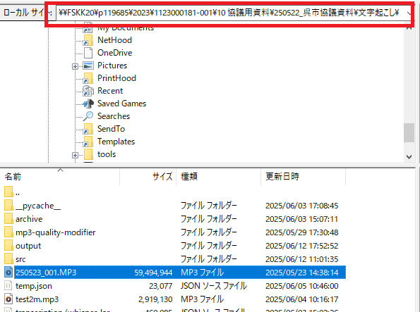
ファイルを選び、右側サーバー上の作業ディレクトリにドラッグ＆ドロップします。
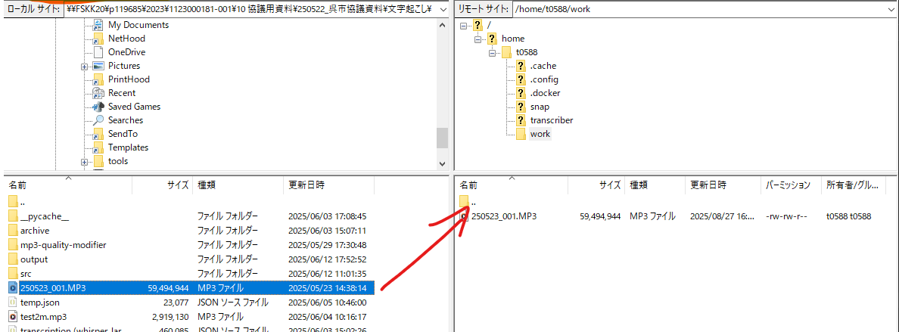
PowerShellでSSH接続
① PowerShellの起動
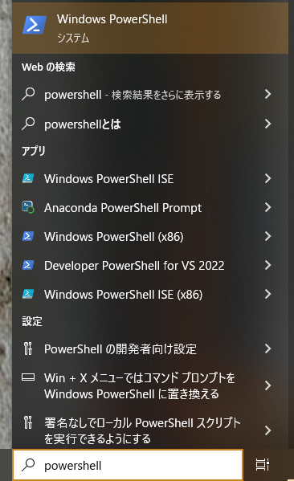
② サーバーへの接続
以下のコマンドでサーバーに接続します。 （ユーザー名とホスト名/IPは自分用のものに置き換えてください）
ssh ユーザー名@ホスト名
// 例
ssh t0588@10.1.185.55
パスワードを求められたら、正しく入力してEnterキーを押します。
Welcom to Ubuntuなどの表示がされたら、Linuxサーバーにアクセスできています。
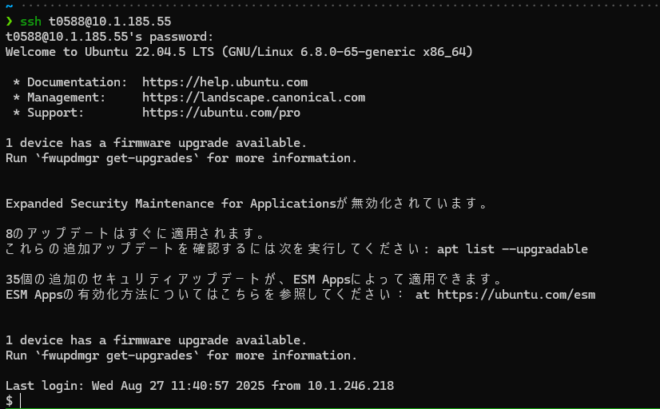
文字起こし用スクリプトの設置
① 文字起こし用スクリプトの有無を確認
サーバーで以下のコマンドを入力し、スクリプトがあるか確認します（スクリプト名：transcriber.sh）:
ls ~/transcriber.sh
「No such file or directory」と出たらスクリプトがありません。以下の手順でスクリプトをLinuxサーバーにコピーしてください。
② FileZillaでスクリプトを転送
FileZillaでご自身のLinuxサーバーのホームディレクトリを開きます。
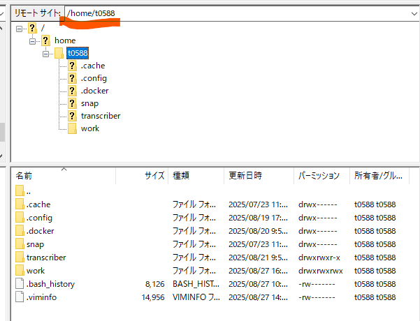
ファイルサーバー上のスクリプトファイル（\\fskk20\c119685\音声文字起こし\transcriber.sh）をドラッグ＆ドロップしてホームディレクトリへコピーします。
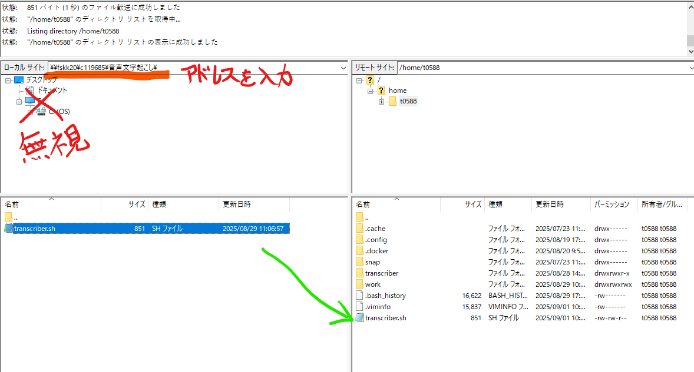
③ スクリプトの実行権限を与える
chmod +x ~/transcriber.sh
文字起こし用スクリプトを実行
① サーバーの稼働状況を確認する
SSH接続中のPowerShellで、次のコマンドを入力します。
docker stats
app-transcriber_<日付_時刻>という名前の処理が2つ以上稼働していた場合、処理数が1つ以下になるまでしばらくお待ちください。
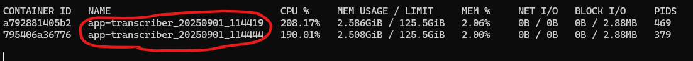
② 実行コマンドの入力
SSH接続中のPowerShellで、次のコマンドを入力します（各値は実際に利用するものに置き換えてください）。
~/transcriber.sh \
作業ディレクトリ名 \
モデル名 \
音声ファイル名 \
出力名
（例）
~/transcriber.sh \
work \
whisper-large-v3 \
audio01.mp3 \
result01
~/transcriber.sh \
作業ディレクトリ名 \
モデル名 \
音声ファイル名 \
出力名 \
diarize
（例）
~/transcriber.sh \
work \
whisper-large-v3 \
audio01.mp3 \
result01 \
diarize
コマンドを実行すると処理が始まり、完了後は作業ディレクトリ内に出力ファイル（出力名.txt）やログファイル（transcriber.log）が保存されます。
transcriber.logに保存されるので、FileZillaでローカルPCにコピーして、状況を確認することができます。transcriber.logを開発者に渡して、対応を依頼してください。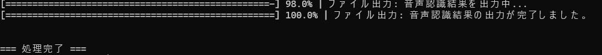
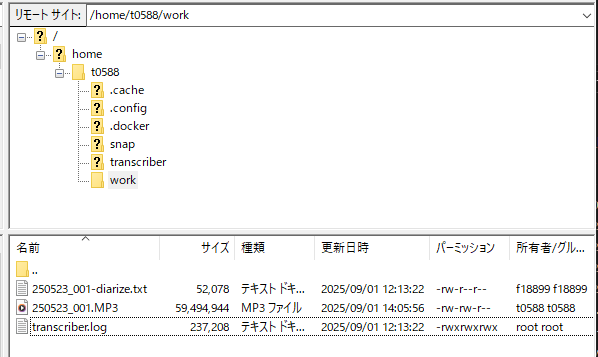
モデル名
コマンドの「モデル名」には、文字起こし処理に利用するAIモデルを指定します。現在は whisper-large-v3 のみが利用可能です。他のモデル名を指定しても動作しませんのでご注意ください。
その他オプション
コマンド末尾の「diarize」などは追加機能（例：話者分離）を有効にするためのオプションです。今後、他にもオプションが追加される可能性があります。新しいオプションが利用可能になった場合は、担当者から案内があります。
結果ファイルのダウンロード
① FileZillaで結果ファイルを取得
FileZilla右側ウィンドウで作業ディレクトリ（例: work）に入り、目的のファイル（例: result01.txt, transcriber.logなど）を探します。
取得したいファイルを選び、左側（ローカルPC側）の保存したい場所へドラッグ＆ドロップしてコピーします。
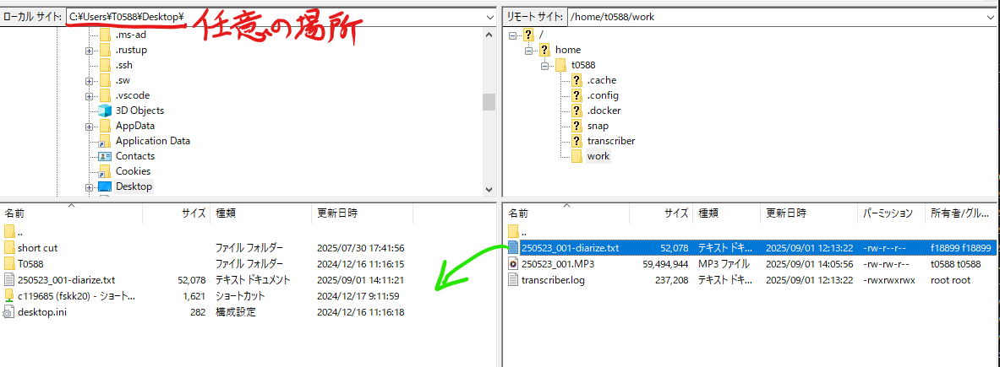
SSHやファイル転送でエラーが出た場合、「ユーザー名」「ホスト名」やパスワードの再確認、ネットワークの接続状況などを見直してください。
サーバー上のコマンドは半角英数で入力します。
操作に不安がある場合や、わからない箇所、解決できない問題がありましたら、画面をスクリーンショットしながら進め、記録を取っておいてください。
わからない場合や失敗した場合は、担当者にご連絡をお願いします。